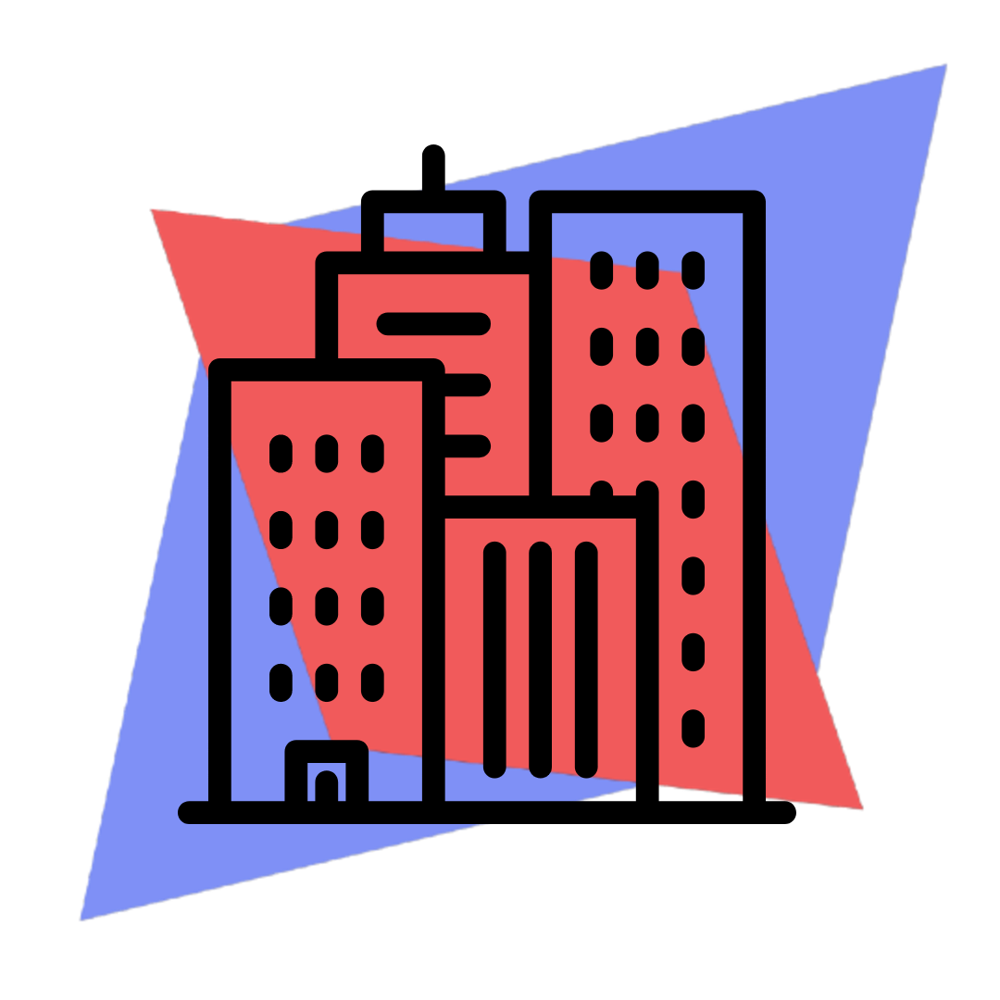

<link rel="preconnect" href="https://fonts.gstatic.com">
<link href="https://fonts.googleapis.com/css2?family=Girassol&display=swap" rel="stylesheet">
<ion-content>
  <div class="login-section ion-padding">
    <div class="heading ion-padding">
      <h1 style="margin-left: 50px;">Relevamiento</h1>
      <h1 style="margin-left: 120px;">Visual</h1>
      
    </div>
  
    <ion-button style="font-family: 'Girassol', cursive;" class="btnLogin" expand="block" shape="round" (click)="onIntro()">Ingreso</ion-button>
  </div>
</ion-content>